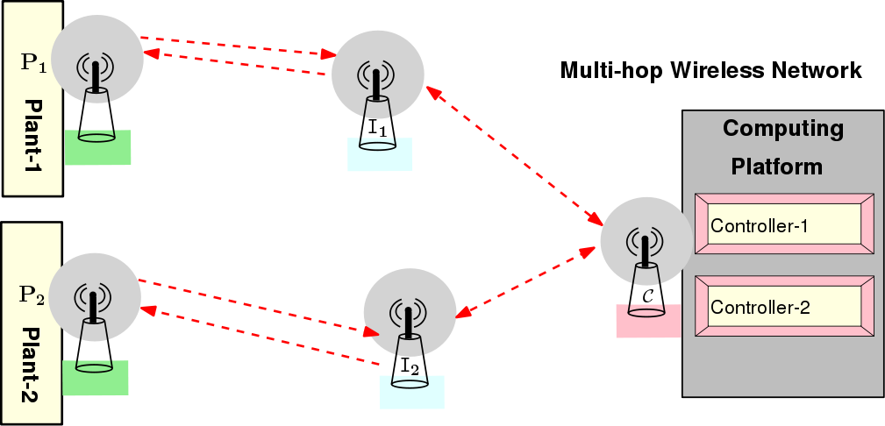

Foundation of Cyber Physical Systems
Term Project
Project 6: Securing Real-time Multi-hop Wireless Networked Control System
Description
Consider a distributed cyber-physical system (CPS) in which remotely located physical plants and controllers communicate among themselves over a multi-hop wireless sensor network (WSN). Such control set-up is termed as a wireless network control system (WNCS). Unattended communication among devices in distributed CPS implementations makes new pathways for malicious interference. Heavyweight standard cryptographic techniques to encrypt every packet on every channel will incur timing overhead. This may violate the real-time guarantee that is utmost important for safety-critical CPSs. Hence, we need to find out the attack surfaces of WNCSs and implement attack detection mechanism that complies with the real-time requirement of the CPS.
Objective and Implementation Steps
- Design a WNCS as given in the following diagram consisting of two plants, two intermediate nodes, one computing platform that has control programs for both the plants.

- Basic TDMA based communication (e.g. WirelessHART) has to be designed keeping in mind the communication delay.
- Consider that the objective of an adversary is to gain knowledge about the communication pattern within the above network. For example, an attacker may listen to a communication channel and try to predict the TDMA slot in which two particular nodes are communicating. On the other hand, in some networks, an adversary may not get direct access to the communication channel. He has to then somehow get the necessary information from the WSN nodes via some side-channel attack techniques. You need to explore such disclosure attack scenarios and provide a detailed survey.
- Assuming that adversary has gained required information to attack the WNCS, implement one attack model on the given network.
- Propose and implement one detection mechanism to thwart such an attack.
Evaluation Guidelines:
- Implementation (60%): Design the WNCS with support for the points mentioned above.
Emphasis shall be given on exploring disclosure attack scenarios, the attack model and the detection mechanism.
- Project Report (20%): Design a detailed report documenting the various modules of the framework and experimental results.
- Project Presentation (20%): Design a detailed presentation describing your framework and experimental observations.
Reference Paper